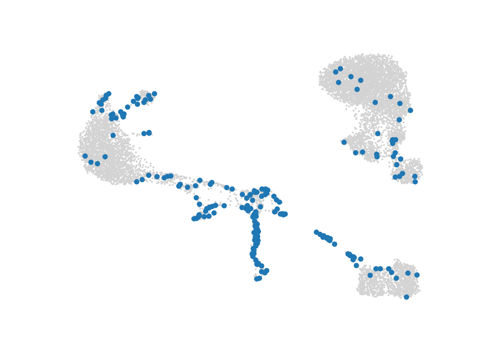

3.3 SEACells (Python)
Under construction…
Replace the following code with ./sub_pages/21-seacells.Rmd
Constructing metacells with SEACells. The code is adapted from the authors’ tutorial.
SEACells work with Anndata objects and used Scanpy for pre-processing single-cell data and for the analysis of data at the metacell level (for the analysis, see section 4.2).
Imports
import os
import pandas as pd
import scanpy as sc
import SEACells
import random
import sys
sys.path.append('./mc_QC/')
import mc_QCGlobal parameters
## Parameters
MC_tool = "SEACell"
gamma = 50 # the requested graining level
## Here we can modify dataset
proj_name = ["cell_lines", "3k_pbmc"][1]
annotation_label = {'cell_lines':'cell_line',
'3k_pbmc':'louvain'}[proj_name]Load data
## here code to download dataset and store it at f'Metacell_tutorial/data/{proj_name}/singlecell_anndata_filtered.h5ad'# Load pre-filtered data
data_folder = os.path.join("./data/", proj_name) # here path to folder with adata
ad = sc.read(os.path.join(data_folder, "singlecell_anndata_filtered.h5ad"))Saving count layers to a raw attribute as raw counts will be used for metacell aggregation.
# Save count as a separate layer
ad.layers['counts'] = ad.X
# Copy the counts to ".raw" attribute of the anndata since it is necessary for downstream analysis
# This step should be performed after filtering
raw_ad = sc.AnnData(ad.layers['counts'])
raw_ad.obs_names, raw_ad.var_names = ad.obs_names, ad.var_names
ad.raw = raw_adStandard pre-processing for single-cell RNA-seq data with Scanpy, for more information, see the Scanpy tutorial.
# Normalize cells, log transform and compute highly variable genes
sc.pp.normalize_per_cell(ad)
sc.pp.log1p(ad)
sc.pp.highly_variable_genes(ad, n_top_genes=1000)# Compute principal components -
# Here we use 10 components to be consistent with out main tutorial, but fill free to explore other number of principal components to use
n_comp = 10
sc.tl.pca(ad, n_comps=n_comp, use_highly_variable=True)
# Compute UMAP for visualization
sc.pp.neighbors(ad, n_neighbors=10, n_pcs=n_comp)
sc.tl.umap(ad)Running SEACells
Setting up SEACells parameters
## User defined parameters
build_kernel_on = 'X_pca' # key in ad.obsm to use for computing metacells
# This would be replaced by 'X_svd' for ATAC data
## Additional parameters
n_waypoint_eigs = 10 # Number of eigenvalues to consider when initializing metacells
n_iter = 50Initialize the SEACell model
# set seed for reproducibility
random.seed(123)
# The number of SEACells is computed as a ratio between the number of single cells and the desired graining level
n_SEACells = int(ad.shape[0]/gamma)
model = SEACells.core.SEACells(ad,
build_kernel_on=build_kernel_on,
n_SEACells=n_SEACells,
n_waypoint_eigs=n_waypoint_eigs,
convergence_epsilon = 1e-5,
verbose = True)
#> Welcome to SEACells!model.construct_kernel_matrix()
M = model.kernel_matrix# Initialize archetypes
model.initialize_archetypes()
#> Building kernel on X_pca
#> Computing diffusion components from X_pca for waypoint initialization ...
#> Determing nearest neighbor graph...
#> Done.
#> Sampling waypoints ...
#> Done.
#> Selecting 42 cells from waypoint initialization.
#> Initializing residual matrix using greedy column selection
#> Initializing f and g...
#> Selecting 10 cells from greedy initialization.
#>
#>
0%| | 0/20 [00:00<?, ?it/s]
100%|##########| 20/20 [00:00<00:00, 469.56it/s]
# Plot the initialization to ensure they are evenly spread
SEACells.plot.plot_initialization(ad, model, plot_basis='X_umap') ## error, mb missing some modules
Fitting model
## fit model
model.fit(min_iter = 10, max_iter = n_iter)
#> Randomly initialized A matrix.
#> Setting convergence threshold at 0.00088
#> Starting iteration 1.
#> Completed iteration 1.
#> Starting iteration 10.
#> Completed iteration 10.
#> Starting iteration 20.
#> Completed iteration 20.
#> Starting iteration 30.
#> Completed iteration 30.
#> Converged after 37 iterations.
Aggregate metacells
membership
membership = model.get_hard_assignments()
# aggregate metacells
mc_ad = SEACells.core.summarize_by_SEACell(ad, SEACells_label='SEACell', summarize_layer='raw')
#>
0%| | 0/52 [00:00<?, ?it/s]
73%|#######3 | 38/52 [00:00<00:00, 374.72it/s]
100%|##########| 52/52 [00:00<00:00, 391.38it/s]
# make `membership` numeric
d = {x: int(i)+1 for i, x in enumerate(mc_ad.obs_names)}
ad.obs.merge(membership)
#> n_genes percent_mito n_counts louvain SEACell
#> 0 781 0.030178 2421.0 CD4 T cells SEACell-15
#> 1 781 0.030178 2421.0 CD4 T cells SEACell-15
#> 2 781 0.030178 2421.0 CD4 T cells SEACell-15
#> 3 781 0.030178 2421.0 CD4 T cells SEACell-15
#> 4 781 0.030178 2421.0 CD4 T cells SEACell-15
#> ... ... ... ... ... ...
#> 189387 1567 0.021160 5678.0 Dendritic cells SEACell-48
#> 189388 1567 0.021160 5678.0 Dendritic cells SEACell-48
#> 189389 1567 0.021160 5678.0 Dendritic cells SEACell-48
#> 189390 1567 0.021160 5678.0 Dendritic cells SEACell-48
#> 189391 1567 0.021160 5678.0 Dendritic cells SEACell-48
#>
#> [189392 rows x 5 columns]
ad.obs['membership'] = [d[x] for x in membership.SEACell]
Metacell QC
Size distribution
#mc_size = SEACells.plot.plot_SEACell_sizes(ad, bins=20)
#mc_ad.obs = pd.merge(mc_ad.obs, mc_size, left_index=True, right_index=True)
#mc_ad.obsPurity of metacells is a proportion of the most abundant cell type within metacell [ref SuperCell]
mc_purity = mc_QC.purity(ad, annotation_label, MC_label = 'membership')
mc_purity.head()
#> louvain louvain_purity
#> membership
#> 1 CD4 T cells 0.553571
#> 2 B cells 0.977778
#> 3 CD4 T cells 0.955882
#> 4 CD14+ Monocytes 0.943396
#> 5 NK cells 1.000000Compactness of metacells is variance of components within metacells [ref SEACells]
compactness = mc_QC.compactness(ad, 'X_pca', MC_label = 'membership', DO_DC = False, name = 'Compactness_PCA', n_comp=n_comp)['Compactness_PCA']
# add compactness to metadata
mc_ad.obs = mc_ad.obs.join(compactness)Separation of metacells is a distance to a closest metacell [ref SEACells]
separation = mc_QC.separation(ad, 'X_pca', MC_label = 'membership', DO_DC = False, name = 'Separation_PCA', n_comp=n_comp)['Separation_PCA']
# add separation to metadata
mc_ad.obs = mc_ad.obs.join(separation)Inner normalized variance (INV) of metacells is mean-normalized variance of gene expression within metacells [ref MC-2]
mc_INV = mc_QC.mc_inner_normalized_var(ad, MC_label = 'membership')
mc_INV_val = mc_INV.quantile(0.95, axis=1, numeric_only=True)
mc_INV_val = pd.DataFrame(mc_INV_val.transpose()).set_axis(['INV'], axis=1, inplace=False)
# add INV to metadata
mc_ad.obs = mc_ad.obs.join(mc_INV_val)